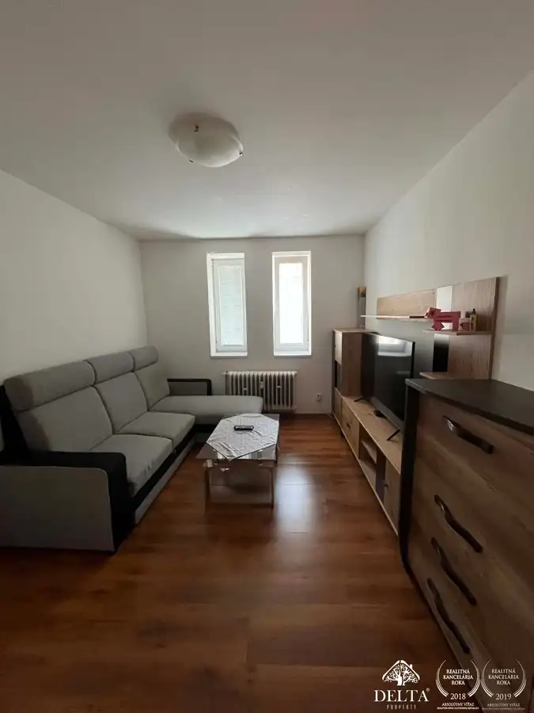
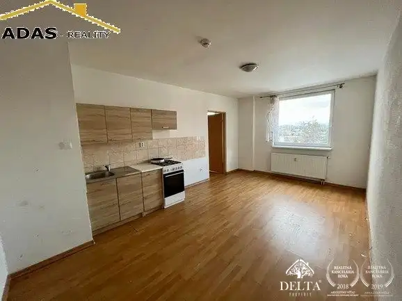

Aktuálna ponuka
6 nehnuteľností, predovšetkým byty, rodinné domy, komerčné priestory. Každá má vlastnú stránku s fotkami, popisom a mapou.
Prezrieť ponuku
 Tu bude Vaša fotkapošlite ju e-mailom, obratom ju vymeníme
Tu bude Vaša fotkapošlite ju e-mailom, obratom ju vymenímeAndrea Šubová · Realitná maklérka · Delta Property s.r.o.
Volám sa Andrea Šubová, som realitná maklérka kancelárie Delta Property s.r.o.. Predaj, prenájom a odhad ceny nehnuteľností, lokality Liptovský Mikuláš, Poprad a Mlynčeky.
Viac o mneVolám sa Andrea Šubová. Som realitná maklérka kancelárie Delta Property s.r.o. a pôsobím predovšetkým v lokalitách Liptovský Mikuláš, Poprad, Mlynčeky a Župčany (Prešovský kraj).
6 nehnuteľností, predovšetkým byty, rodinné domy, komerčné priestory. Každá má vlastnú stránku s fotkami, popisom a mapou.
Prezrieť ponuku
Liptovský Mikuláš, Poprad, Mlynčeky, Župčany a okolie. Ponuku si môžete prezrieť podľa lokality.
Nehnuteľnosti v lokalite
Odhad trhovej ceny, príprava prezentácie, obhliadky, zmluvy a odovzdanie nehnuteľnosti.
Dohodnúť stretnutieDomNové
216 000 €Bývajte pod Tatrami! Nové rodinné domy v Mlynčekoch – AKCIA -10%
Mlynčeky
140 m²
DomNové
260 000 €Ponúkame na predaj novostavbu rodinného dom ktorý sa nachádza v obci Župčany, vzdialenej, len 8km od Prešova
Župčany
200 m²
Byt
166 000 €Ponúkame na predaj 3-izbový byt s loggiou, nachádzajúci sa v mestskej časti Palúdzka
Liptovský Mikuláš
3-izbový60.92 m²5. podlažie
Komerčné priestoryNové
Cena na vyžádáníVeľkorysý komerčný priestor na prenájom – centrum Popradu
Poprad
300 m²

Byt Cena na vyžádáníDlhodobý prenájom: Čiastočne zariadený 2-izbový tehlový byt v centre (BD Solisko) Poprad 2-izbový57.36 m²1. podlažie
Byt Cena na vyžádáníPonúkame na dlhodobý prenájom zrekonštruované 1-izbové a 2-izbové byty v pokojnej časti Liptovského Mikuláša na ulici Revolučná. Liptovský Mikuláš 2-izbový50 m²2. podlažieTomuto výberu zatiaľ nezodpovedá žiadna ponuka. Napíšte mi, čo hľadáte.
Každý špendlík je jedna nehnuteľnosť z mojej ponuky. Kliknite a pozrite sa.
© prispievatelia OpenStreetMap
Na čo sa pýtate najčastejšie, skôr než sa stretneme.
Odhad trhovej ceny vychádza z aktuálnych ponúk a predajov v lokalite, nie z cenníkových tabuliek. Podmienky Vám poviem pri prvom telefonáte.
Najprv obhliadka a odhad ceny, potom príprava prezentácie (fotografie, popis, inzercia), obhliadky so záujemcami, rezervačná zmluva, kúpna zmluva, návrh na vklad do katastra a odovzdanie nehnuteľnosti. O každom kroku viete vopred.
Najrýchlejšie cez WhatsApp alebo telefón. Termín stretnutia alebo obhliadky dohodneme podľa Vás.